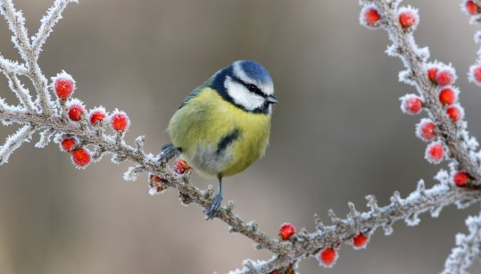

Šonedēļ vēl gaisa temperatūra lielākoties būs virs 0 grādiem. Piektdien un sestdien dienas laikā vietām Kurzemē gaisa temperatūra paaugstināsies līdz plus 5, plus 6 grādiem, bet nākamnedēļ visā Latvijā gaidāms sals – atsevišķās naktīs termometra stabiņš var noslīdēt līdz mīnus 27 grādiem.
Saraksts
ytrew